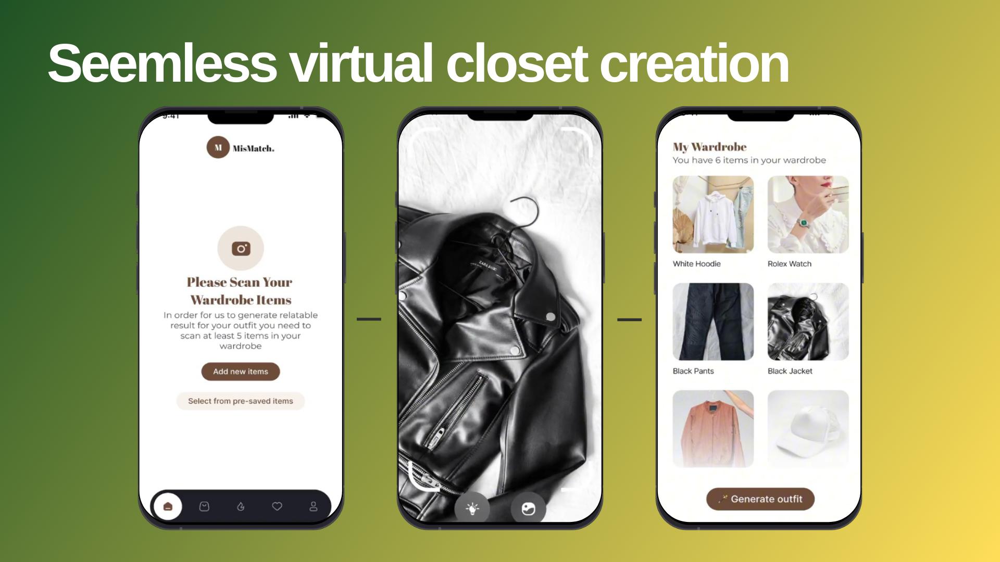
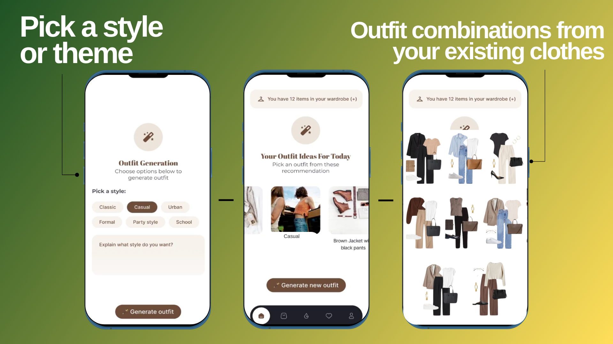
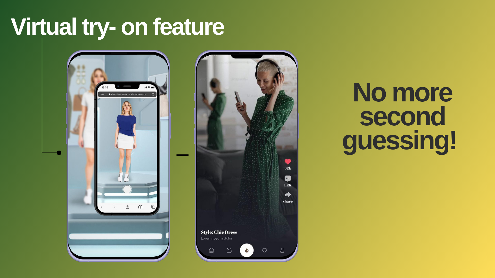
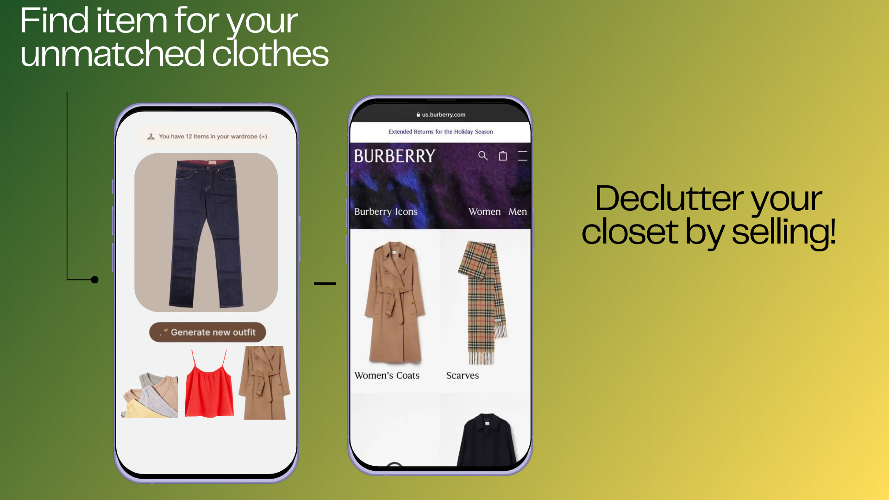

Every day, people waste a surprising amount of time just trying to figure out what to wear.
It might seem small, but it adds up. Studies show that the average person spends around
102 hours a year on this decision. That's valuable time that could be spent on work, family, or
even just getting a bit more sleep!
But it's not just about time—there's also the stress. Standing in front of a full closet yet feeling like
you have nothing to wear is frustrating and can knock your confidence before you've even left the house.
On top of that, fast fashion is creating a massive environmental crisis. People buy more clothes
than they need—often on impulse—and much of it ends up in landfills. The fashion industry alone produces
92 million tons of textile waste every year, making it a serious environmental issue.
How MisMatch Fixes This
Save time - No more wasting hours deciding what to wear.
Reduce stress - A personalized, AI-powered style assistant at your fingertips.
Boost confidence - Helping you feel great in your outfits.
Promote sustainability - Make the most of the wardrobe you already own.
Target Audience
Our app is built for:
Young professionals & students - Busy individuals who want to look great without the hassle.
Fashion enthusiasts - Those who love experimenting with styles and organizing their wardrobe.
Eco-conscious individuals - People who care about sustainability and reducing fashion waste.
Anyone who feels “I have nothing to wear” despite having a full closet!
We're primarily focusing on Gen Z and Millennials (ages 18-35)—tech-savvy individuals who value convenience and sustainability.
Device Requirements
Smartphones (iOS & Android) - Core platform for easy outfit selection and AR try-ons.
Tablet Support (Optional) - For users who prefer a larger screen experience.
Desktop Web Browser (Future Consideration) - Potential future expansion for wardrobe organization.
System Requirements
Cloud Storage & Database - Secure storage for wardrobe images and AI-generated outfit suggestions.
AI Model - Machine learning algorithms (TensorFlow/PyTorch) for personalized outfit recommendations.
AR Functionality - Uses ARKit (iOS) & ARCore (Android) for a virtual try-on experience.
Camera Integration - Users can upload clothing images via their phone's camera.
Internet Access - Required for AI processing, image uploads, and syncing across devices. Offline mode may be introduced later.
Features
🛍️ Digital Wardrobe Organizer
MisMatch lets users build a virtual version of their wardrobe by simply snapping photos of their clothes.
The app’s built-in AI scans these images to recognize and categorize each item by type, color, and style,
automatically organizing everything into a clean, digital catalog.
Users can manually tag items based on occasion, season, or personal style preferences—making it easier to search later.
Instead of rummaging through piles of clothes, users can quickly browse their entire wardrobe in-app, whether at home or on the go.
This saves time and helps users rediscover forgotten pieces.
🤖 AI-Powered Outfit Recommendations
One of MisMatch's standout features is its smart outfit recommendation system powered by machine learning.
The app considers factors like weather, user preferences, and upcoming plans to suggest tailored outfit combinations.
For instance, if a user has a work meeting on a rainy day, the app might recommend a smart blazer paired with waterproof boots.
Over time, MisMatch learns a user's style habits—whether they prefer casual wear, bold patterns, or neutral tones—
allowing for even more personalized suggestions.
🕶️ Virtual Try-On with AR
MisMatch integrates augmented reality (AR) to let users see how outfits will look on them without physically trying them on.
Using their smartphone camera, users can view a real-time overlay of clothing items on their body.
This feature is perfect for experimenting with new outfits or seeing how an old dress pairs with a new jacket—
without the hassle of changing multiple times.
🌿 Sustainable Fashion Insights
Beyond convenience, MisMatch is designed to promote eco-friendly wardrobe habits.
The app encourages users to maximize what they already own instead of defaulting to new purchases.
It tracks how often each item is worn and offers friendly reminders to rotate underused pieces.
MisMatch also introduces users to sustainable brands and shares tips on reducing textile waste.
For example, it might suggest styling a neglected pair of jeans differently or highlight a nearby clothing swap event.
📅 Event & Weather Integration
MisMatch helps users dress appropriately for any situation by integrating event-based and
weather-specific outfit suggestions.
Users can input upcoming occasions—dinner parties, job interviews, casual coffee dates—and the app
cross-references this with the weather forecast to suggest stylish yet practical outfits.
Whether it's a summer dress on a warm day or a layered outfit for a cold evening, MisMatch ensures users are always prepared.
📊 User Insights & Wardrobe Analytics
For those who enjoy tracking their habits, MisMatch offers wardrobe analytics.
Users can view data on their most worn items, favorite outfit combinations, and rarely used pieces.
These insights help users make smarter fashion decisions, such as investing in versatile staples
or realizing they don't need another black jacket. The app may even suggest repurposing or donating
lesser-used items, reinforcing its sustainability mission.
How It Works

Virtual Wardrobe Creation

Pick a Style or Theme

Virtual Try-On

Find Unmatched Clothes
Future Possibilities
We aim to integrate AI-driven fashion assistance, clothing resale features, and sustainability tracking.
The Team
Meet the passionate minds behind MisMatch.
Salwa Mehreen – Founder, CS major, Whitworth University
Rabi Tayyab – Junior Developer, Mathematics,CS, Whitworth University